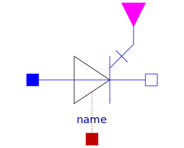
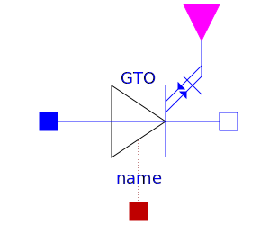
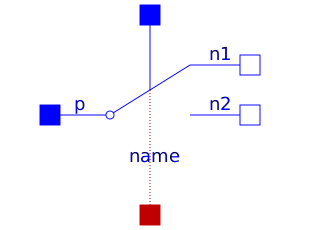
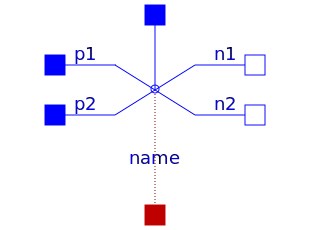
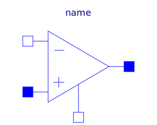
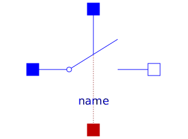
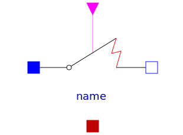
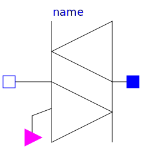
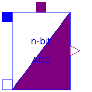
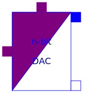

This package contains electrical components with idealized behaviour. To enable more realistic applications than it is possible with pure realistic behavior some components are improved by additional features. E.g. the switches have resistances for the open or close case which can be parametrized.
| Name | Description |
|---|---|
|  IdealThyristor | Ideal thyristor |
|  IdealGTOThyristor | Ideal GTO thyristor |
| Ideal commuting switch | |
| Ideal intermediate switch | |
|  ControlledIdealCommutingSwitch | Controlled ideal commuting switch |
|  ControlledIdealIntermediateSwitch | Controlled ideal intermediate switch |
|  IdealOpAmp | Ideal operational amplifier (norator-nullator pair) |
| Ideal operational amplifier (norator-nullator pair), but 3 pins | |
| Ideal operational amplifier with limitation | |
| Ideal diode | |
| Ideal transformer core with or without magnetization | |
| Ideal gyrator | |
| Idle branch | |
| Short cut branch | |
| Ideal electrical opener | |
| Ideal electrical closer | |
|
|
Controlled ideal electrical opener |
|  ControlledIdealClosingSwitch | Controlled ideal electrical closer |
| Ideal opening switch with simple arc model | |
|  CloserWithArc | Ideal closing switch with simple arc model |
| Controlled ideal electrical opener with simple arc model | |
| Controlled ideal electrical closer with simple arc model | |
|  IdealTriac | Ideal triac, based on ideal thyristors |
|  AD_Converter | Simple n-bit analog to digital converter |
|  DA_Converter | Simple digital to analog converter |